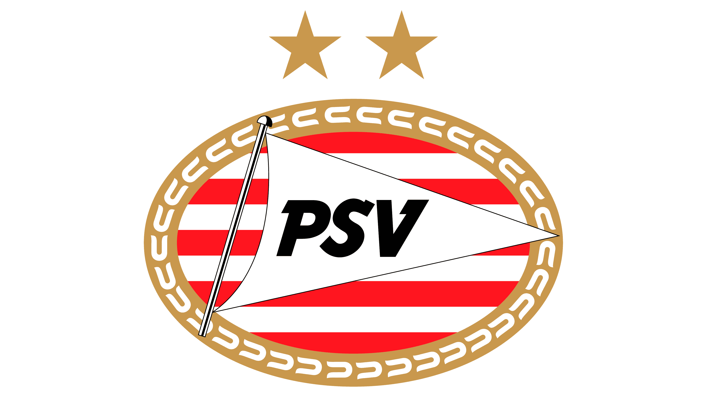
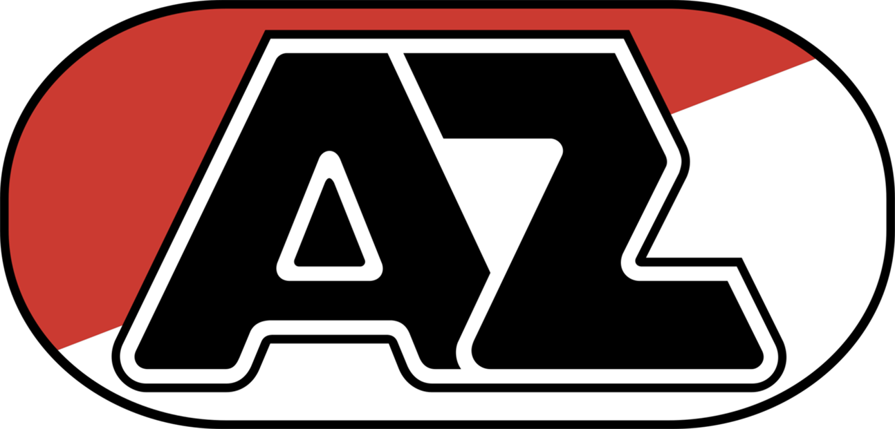
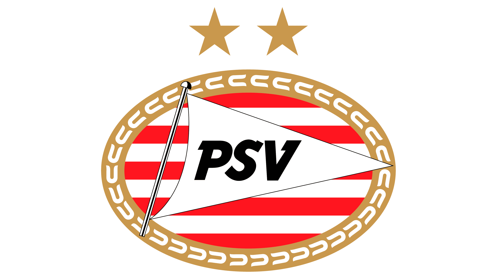
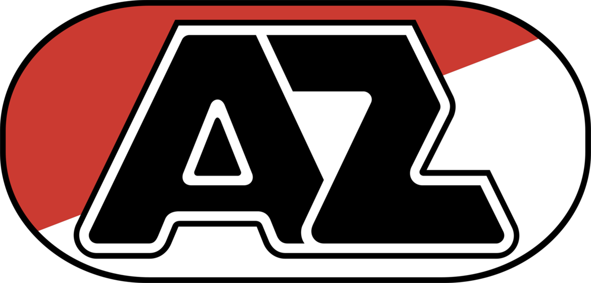

Top 4 clubs van Nederland
Hieronder zijn de top 4 clubs uit Nederland te zien.
Ajax

Psv 
Feyenoord
Az 
De Eredivisie is de hoogste professionele voetbalcompetitie van Nederland. Het werd opgericht in 1956 en bestaat uit 18 teams. De Eredivisie is ontstaan als een poging om een nationale voetbalcompetitie te creëren die de regionale competities zou vervangen. De competitie heeft sinds de oprichting vele veranderingen doorgemaakt, waaronder uitbreidingen en formatwijzigingen.
In de Eredivisie spelen de beste voetbalteams van Nederland tegen elkaar. Het seizoen loopt van augustus tot en met mei, met in totaal 34 wedstrijden per team. De teams spelen twee keer tegen elkaar, één keer thuis en één keer uit. Het team dat aan het einde van het seizoen de meeste punten heeft verzameld, wordt gekroond tot kampioen van de Eredivisie.
De Eredivisie is een populaire competitie in Nederland en trekt veel aandacht van voetbalfans over de hele wereld. Het is de thuisbasis van bekende clubs zoals Ajax, PSV en Feyenoord, die vaak deelnamen aan Europese competities zoals de UEFA Champions League en de UEFA Europa League. Elk seizoen strijden de 18 teams om de felbegeerde Eredivisie-titel en om zich te kwalificeren voor Europese competities.
De KNVB is de voetbalbond van Nederland en is gevestigd in Zeist. Het hoofdkantoor van de KNVB bevindt zich op Sportcampus de KNVB, een groot sportcomplex waar talloze voetbalactiviteiten plaatsvinden.
Als voetbalbond is de KNVB verantwoordelijk voor de organisatie en regulering van het voetbal in Nederland. Dit omvat het opstellen en handhaven van regels en voorschriften voor het spel, het organiseren van competities en evenementen, en het selecteren en trainen van nationale teams. De KNVB werkt ook samen met clubs en voetballers om de sport te promoten en te ontwikkelen.
In Zeist biedt de KNVB verschillende faciliteiten en diensten aan voor voetballers en fans. Er zijn trainingsvelden en een sportcomplex beschikbaar voor de nationale teams en andere teams om te trainen en wedstrijden te spelen. Daarnaast organiseert de KNVB opleidingen en cursussen voor trainers en scheidsrechters om hun vaardigheden te verbeteren en hun kennis te vergroten.
Hieronder zijn de top 4 clubs uit Nederland te zien.
Ajax
Psv 
Feyenoord
Az 
Kaart met stadion locaties
De Eredivisie is de hoogste professionele voetbalcompetitie in Nederland en bestaat uit 18 teams. Elk team heeft zijn eigen stadion waar thuiswedstrijden worden gespeeld. Deze kaart toont de locaties van deze stadions en biedt een handig overzicht van waar elk team zijn thuiswedstrijden speelt.
De stadions in de Eredivisie variëren in grootte en capaciteit. Zo heeft het Johan Cruijff ArenA in Amsterdam, de thuisbasis van Ajax, een capaciteit van meer dan 55.000 zitplaatsen, terwijl het stadion van RKC Waalwijk, het Mandemakers Stadion, slechts 7500 zitplaatsen heeft hieronder is een visualisatie te zien die dat duidelijk weergeeft. Elk stadion heeft zijn eigen kenmerken en geschiedenis, waardoor het een unieke ervaring is om een wedstrijd bij te wonen.
De stadions zijn niet alleen belangrijk voor de thuiswedstrijden van de teams, maar spelen ook een belangrijke rol bij het creëren van een sfeer en beleving rondom de wedstrijden. Supporters van elk team verzamelen zich in het stadion om hun team aan te moedigen en zorgen voor een onvergetelijke sfeer. Veel stadions hebben daarom speciale tribunes voor fanatieke supporters, zoals de F-Side bij Ajax en het uitvak voor de supporters van het bezoekende team.
De kaart die ik heb gemaakt, biedt een nuttig overzicht van de stadions in de Eredivisie en kan fans helpen bij het plannen van hun reizen naar uitwedstrijden en het kiezen van welke wedstrijden ze willen bijwonen. Het toont ook de geografische spreiding van de teams in de competitie en biedt een visueel inzicht in de afstanden die de teams moeten afleggen om uitwedstrijden te spelen.
Visualisaties
Hieronder staan twee verschillende visualisaties. ééntje die gaat over het aantal capaciteit per stadion dat speelt in de Eredivisie en ééntje die laat zien hoevaak en wanneer een club kampioen is geworden van de Eredivisie
hhhhhhhh
De afstand de het grootste is van twee verschillende voetbalclubs